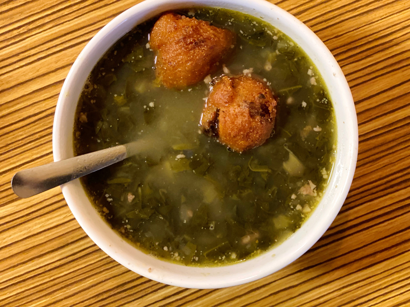

Swamp Beast Soup

Description
Swamp Beast soup is a great dish to whip up in a pinch when you're too lazy to visit 100 rads bar. A fair warning - It does require a specific taste for mutant eyeballs and other mystery meat.
Ingredients
- Swamp Beast eyeballs
- Swamp water (boiled)
- Meat (preferably flesh's)
- Turnips
- Milk (ask Sidorovich)
Steps
- Toss everything into the pot and boil for 2 hours
- sip milk while you wait